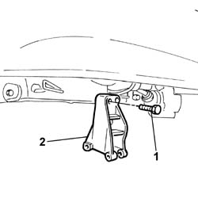

5040A26 COMPRESSOR MOUNT - R R
- Path
- Procedures > 50 AUXILIARY UNITS > 5040 AIR CONDITIONING CASING AND COMPONENTS > 5040A CHECKING OPERATION OF AIR CONDITIONER (TEMPERATURE) > 5040A26 COMPRESSOR MOUNT - R R
- Kind
- repair procedure (removal / refitting; the operation number is the code)
- Applies to
- engines: 2.8 JTD 8V; all production periods
- Interactive page
- https://sloeber94.github.io/elrnDB-fDct/en/#/244001267
Applies to: engines: 2.8 JTD 8V; all production periods
 Removing
Removing
 Refitting
RefittingOp. 0010T84 COOLANT FOR AIR CONDITIONING SYSTEM DEHYDRATE AND RECHARGE
- Disconnect the negative battery terminal.
Op. 7055B54 UNDER-ENGINE GUARD - R R
Op. 1092D10 AIR CONDITIONER COMPRESSOR DRIVE BELT - R + R
Op. 5040A20 AIR CONDITIONER COMPRESSOR - R+R - INCLUDES FLUID LEVEL CHECK AND TOP UP IF NECESSARY
See in Op. 1048B14
See in Op. 1048B22
See in Op. 1048B50
1. Undo the bolts fixing the compressor mounting.
2. Remove the compressor mounting.

Applies to: engines: 2.8 JTD 8V; all production periods
Refitting
Removing- Fasten the compressor mounting to the power unit, tightening the fixing bolts to the recommended torque.
 | Value - daNm | Fastening | Component | Ø |
|---|---|---|---|---|
. | 2,0 | Bolt | COMPRESSOR MOUNT (AC) | - |
See in Op. 1048B50
See in Op. 1048B22
See in Op. 1048B14
Op. 5040A20 AIR CONDITIONER COMPRESSOR - R+R - INCLUDES FLUID LEVEL CHECK AND TOP UP IF NECESSARY
Op. 1092D10 AIR CONDITIONER COMPRESSOR DRIVE BELT - R + R
Op. 7055B54 UNDER-ENGINE GUARD - R R
- Connect the negative battery terminal.
Op. 0010T84 COOLANT FOR AIR CONDITIONING SYSTEM DEHYDRATE AND RECHARGE
Topics linked from this page (4)
- 0010T84 COOLANT FOR AIR CONDITIONING SYSTEM DEHYDRATE AND RECHARGE
- 1092D10 AIR CONDITIONER COMPRESSOR DRIVE BELT - R + R
- 5040A20 AIR CONDITIONER COMPRESSOR - R+R - INCLUDES FLUID LEVEL CHECK AND TOP UP IF NECESSARY
- 7055B54 UNDER-ENGINE GUARD - R R